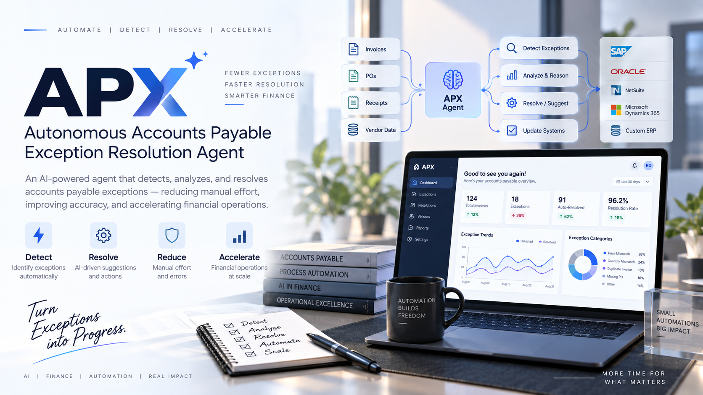

Enterprise RAG / AI Search Platform
A retrieval and generation platform designed to make answers traceable, testable, and observable.
Read the case studyOpen to AI / ML & software opportunities
AI systems engineer focused on RAG, backend systems, agentic automation, and measurable AI workflows. Available for roles, placement, and internships.
Focused on RAG, NLP, backend systems, and applied machine learning.
Selected work
Each project is framed around the engineering question, the system design, and how success should be measured.
A retrieval and generation platform designed to make answers traceable, testable, and observable.
Read the case study
An explainable, stateful workflow for discovering, evaluating, and preparing job applications.
View project status
An evidence-grounded workflow for detecting, investigating, and resolving accounts-payable exceptions. Dashboard values are illustrative interface content, not production results.
Open repositoryClaimAI · Agent workflow automation · Transaction APIs · Fraud prediction · Multilingual NLP · Career path recommendation · Inventory systems · SQL analytics
Evidence / 001
Selected systems are described with current status, implementation scope, and verification boundaries.
Enterprise RAG / AI search platform
Naive vector search can return plausible but weak evidence. A useful enterprise assistant needs retrieval quality, citation traceability, and a way to inspect failures.
Combine document ingestion, dense retrieval, BM25, hybrid rank fusion, cross-encoder reranking, evidence-constrained generation, citation validation, and pipeline observability.
Evaluate Recall@5, MRR, nDCG, citation validity, faithfulness, latency, and token cost. These are evaluation dimensions, not claimed results.
Stack: Python · FastAPI · React · FAISS · BM25 · SentenceTransformers · LLM APIs
Active development · Phase 5 persistence foundation
Job search repeats discovery, fit evaluation, decision-making, application preparation, and follow-up without durable state or traceability.
AI Job Agent models jobs, candidates, decisions, rules, and audit information through small, testable components and explicit interfaces.
Phase 4 and integrated audit complete; Phase 5 persistence foundation in progress; 188 tests passing with 0 failures and 0 warnings.
Vision: Discover → understand → evaluate fit → explain decision → persist state → prepare application → track follow-up.
Recommendation system
Resume and job-description text are parsed into structured skills, requirements, and profile signals.
TF-IDF and dense semantic representations support relevance scoring, ranked recommendations, and skill-gap analysis.
A Streamlit dashboard makes recommendations and missing skills visible to the user rather than hiding the ranking logic.
Stack: Python · scikit-learn · embeddings · Streamlit · SQL
Open-source engineering system
Invoices, purchase orders, receipts, vendor data, and accounts-payable exception signals.
Deterministic validation, hybrid evidence retrieval, temporal anchoring, investigation, risk policy, approval boundaries, and guarded actions.
Persistence, idempotency, retries, compensation, dead-letter handling, dry runs, observability, security, and evaluation remain explicit.
Repository: APX on GitHub ↗
Project directory
Selected work gets the full case-study treatment. This index keeps the breadth visible without diluting the main story.
Experience & evidence
Completed an AI internship with work spanning Google Gemini API integration, REST API concepts, enterprise recommendation architecture, resume parsing, job matching, and ranking workflows.

Certificate-backed internship completed with Flowrage Technology. Ask for evidence pack →
Capabilities
RAG · hybrid search · BM25 · reranking · embeddings · LLM applications · evaluation · citation validation · SHAP
Python · FastAPI · REST APIs · Pydantic · SQL · MySQL · vector search · async services · OpenAPI
React · Streamlit · Docker · Docker Compose · Git · Playwright · workflow automation · observability
NLP · machine learning · deep learning · feature engineering · ranking · data structures · algorithms
About
I’m an Artificial Intelligence & Data Science engineer at KPRIET, building practical AI systems that go beyond isolated model demos.
My work sits at the intersection of retrieval engineering, natural language processing, backend development, and intelligent automation. I care about the layers that make AI dependable: ranking, validation, evaluation, reproducibility, and observability.
Primary differentiator: I don’t stop at “the model generated an answer.” I ask whether it retrieved the right evidence, whether the answer is grounded, and how we can prove it.
Education & credentials
2027
KPRIET
Certifications
Credential list consolidated from the supplied professional records.
06 / Contact
I’m interested in AI/ML engineering, backend systems, and software roles where there is something real to measure, debug, and improve. Available for job, placement, and internship opportunities.